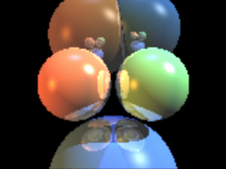

2.3.10 SDL tutorial: A raytracer

|
|
2.3.9 While-loop tutorial |
POV-Ray 3.6 for UNIX documentation 2.3.10 SDL tutorial: A raytracer |
2.4 Questions and Tips |
|
A raytracer made with POV-Ray sounds really weird, doesn't it? What is it anyways? POV-Ray is already a raytracer in itself, how can we use it to make a raytracer? What the...?
The idea is to make a simple sphere raytracer which supports colored spheres (with diffuse and specular lighting), colored light sources, reflections and shadows with the POV-Ray SDL (Scene Description Language), then just render the image created this way. That is, we do not use POV-Ray itself to raytrace the spheres, but we make our own raytracer with its SDL and use POV-Ray's raytracing part to just get the image on screen.
What obscure idea could be behind this weirdness (besides a very serious case of YHBRFTLW...)? Why do not just use POV-Ray itself to raytrace the spheres a lot faster and that is it?
The idea is not speed nor quality, but to show the power of the POV-Ray SDL. If you know how to make such a thing as a raytracer with it, we can really grasp the expressive power of the SDL.
The idea of this document is to make a different approach to POV-Ray SDL teaching. It is intended to be a different type of tutorial: Instead of starting from the basics and give simple and dumb examples, we jump right into a high-end SDL code and see how it is done. However, this is done in a way that even beginners can learn something from it.
Another advantage is that you will learn how a simple sphere raytracer is done by reading this tutorial. There are lots of misconceptions about raytracing out there, and knowing how to make one helps clear most of them.
Although this tutorial tries to start from basics, it will go quite fast to very "high-end" scripting, so it might not be the best tutorial to read for a completely new user, but it should be enough to have some basic knowledge. Also more advanced users may get some new info from it.
Note: in some places some mathematics is needed, so you would better not be afraid of math.
If some specific POV-Ray SDL syntax is unclear you should consult the POV-Ray documentation for more help. This tutorial explains how they can be used, not so much what is their syntax.
The idea is to raytrace a simple scene consisting of spheres and light sources into a 2-dimensional array containing color vectors which represents our "screen".
After this we just have to put those colors on the actual scene for POV-Ray to show them. This is made by creating a flat colored triangle mesh. The mesh is just flat like a plane with a color map on it. We could as well have written the result to a format like PPM and then read it and apply it as an image map to a plane, but this way we avoid a temporary file.
The following image is done with the raytracer SDL. It calculated the image at a resolution of 160x120 pixels and then raytraced an 512x384 image from it. This causes the image to be blurred and jagged (because it is practically "zoomed in" by a factor of 3.2). Calculating the image at 320x240 gives a much nicer result, but it is also much slower:

Note: there are no real spheres nor light sources here ("real" from the point of view of POV-Ray), just a flat colored triangle mesh (like a plane with a pigment on it) and a camera, nothing else.
Here is the source code of the raytracer; we will look it part by part through this tutorial.
#declare ImageWidth = 160;
#declare ImageHeight = 120;
#declare MaxRecLev = 5;
#declare AmbientLight = <.2,.2,.2>;
#declare BGColor = <0,0,0>;
// Sphere information.
// Values are:
// Center, <Radius, Reflection, 0>, Color, <phong_size, amount, 0>
#declare Coord = array[5][4]
{ {<-1.05,0,4>, <1,.5,0>, <1,.5,.25>, <40, .8, 0>}
{<1.05,0,4>, <1,.5,0>, <.5,1,.5>, <40, .8, 0>}
{<0,-3,5>, <2,.5,0>, <.25,.5,1>, <30, .4, 0>}
{<-1,2.3,9>, <2,.5,0>, <.5,.3,.1>, <30, .4, 0>}
{<1.3,2.6,9>, <1.8,.5,0>, <.1,.3,.5>, <30, .4, 0>}
}
// Light source directions and colors:
#declare LVect = array[3][2]
{ {<-1, 0, -.5>, <.8,.4,.1>}
{<1, 1, -.5>, <1,1,1>}
{<0,1,0>, <.1,.2,.5>}
}
//==================================================================
// Raytracing calculations:
//==================================================================
#declare MaxDist = 1e5;
#declare ObjAmnt = dimension_size(Coord, 1);
#declare LightAmnt = dimension_size(LVect, 1);
#declare Ind = 0;
#while(Ind < LightAmnt)
#declare LVect[Ind][0] = vnormalize(LVect[Ind][0]);
#declare Ind = Ind+1;
#end
#macro calcRaySphereIntersection(P, D, sphereInd)
#local V = P-Coord[sphereInd][0];
#local R = Coord[sphereInd][1].x;
#local DV = vdot(D, V);
#local D2 = vdot(D, D);
#local SQ = DV*DV-D2*(vdot(V, V)-R*R);
#if(SQ < 0) #local Result = -1;
#else
#local SQ = sqrt(SQ);
#local T1 = (-DV+SQ)/D2;
#local T2 = (-DV-SQ)/D2;
#local Result = (T1<T2 ? T1 : T2);
#end
Result
#end
#macro Trace(P, D, recLev)
#local minT = MaxDist;
#local closest = ObjAmnt;
// Find closest intersection:
#local Ind = 0;
#while(Ind < ObjAmnt)
#local T = calcRaySphereIntersection(P, D, Ind);
#if(T>0 & T<minT)
#local minT = T;
#local closest = Ind;
#end
#local Ind = Ind+1;
#end
// If not found, return background color:
#if(closest = ObjAmnt)
#local Pixel = BGColor;
#else
// Else calculate the color of the intersection point:
#local IP = P+minT*D;
#local R = Coord[closest][1].x;
#local Normal = (IP-Coord[closest][0])/R;
#local V = P-IP;
#local Refl = 2*Normal*(vdot(Normal, V)) - V;
// Lighting:
#local Pixel = AmbientLight;
#local Ind = 0;
#while(Ind < LightAmnt)
#local L = LVect[Ind][0];
// Shadowtest:
#local Shadowed = false;
#local Ind2 = 0;
#while(Ind2 < ObjAmnt)
#if(Ind2!=closest & calcRaySphereIntersection(IP,L,Ind2)>0)
#local Shadowed = true;
#local Ind2 = ObjAmnt;
#end
#local Ind2 = Ind2+1;
#end
#if(!Shadowed)
// Diffuse:
#local Factor = vdot(Normal, L);
#if(Factor > 0)
#local Pixel=Pixel+LVect[Ind][1]*Coord[closest][2]*Factor;
#end
// Specular:
#local Factor = vdot(vnormalize(Refl), L);
#if(Factor > 0)
#local Pixel =
Pixel +
LVect[Ind][1]*pow(Factor, Coord[closest][3].x)*
Coord[closest][3].y;
#end
#end
#local Ind = Ind+1;
#end
// Reflection:
#if(recLev < MaxRecLev & Coord[closest][1].y > 0)
#local Pixel =
Pixel + Trace(IP, Refl, recLev+1)*Coord[closest][1].y;
#end
#end
Pixel
#end
#debug "Rendering...\n\n"
#declare Image = array[ImageWidth][ImageHeight]
#declare IndY = 0;
#while(IndY < ImageHeight)
#declare CoordY = IndY/(ImageHeight-1)*2-1;
#declare IndX = 0;
#while(IndX < ImageWidth)
#declare CoordX =
(IndX/(ImageWidth-1)-.5)*2*ImageWidth/ImageHeight;
#declare Image[IndX][IndY] =
Trace(-z*3, <CoordX, CoordY, 3>, 1);
#declare IndX = IndX+1;
#end
#declare IndY = IndY+1;
#debug concat("\rDone ", str(100*IndY/ImageHeight, 0, 1),
"% (line ",str(IndY,0,0)," out of ",str(ImageHeight,0,0),")")
#end
#debug "\n"
//==================================================================
// Image creation (colored mesh):
//==================================================================
#default { finish { ambient 1 } }
#debug "Creating colored mesh to show image...\n"
mesh2
{ vertex_vectors
{ ImageWidth*ImageHeight*2,
#declare IndY = 0;
#while(IndY < ImageHeight)
#declare IndX = 0;
#while(IndX < ImageWidth)
<(IndX/(ImageWidth-1)-.5)*ImageWidth/ImageHeight*2,
IndY/(ImageHeight-1)*2-1, 0>,
<((IndX+.5)/(ImageWidth-1)-.5)*ImageWidth/ImageHeight*2,
(IndY+.5)/(ImageHeight-1)*2-1, 0>
#declare IndX = IndX+1;
#end
#declare IndY = IndY+1;
#end
}
texture_list
{ ImageWidth*ImageHeight*2,
#declare IndY = 0;
#while(IndY < ImageHeight)
#declare IndX = 0;
#while(IndX < ImageWidth)
texture { pigment { rgb Image[IndX][IndY] } }
#if(IndX < ImageWidth-1 & IndY < ImageHeight-1)
texture { pigment { rgb
(Image[IndX][IndY]+Image[IndX+1][IndY]+
Image[IndX][IndY+1]+Image[IndX+1][IndY+1])/4 } }
#else
texture { pigment { rgb 0 } }
#end
#declare IndX = IndX+1;
#end
#declare IndY = IndY+1;
#end
}
face_indices
{ (ImageWidth-1)*(ImageHeight-1)*4,
#declare IndY = 0;
#while(IndY < ImageHeight-1)
#declare IndX = 0;
#while(IndX < ImageWidth-1)
<IndX*2+ IndY *(ImageWidth*2),
IndX*2+2+IndY *(ImageWidth*2),
IndX*2+1+IndY *(ImageWidth*2)>,
IndX*2+ IndY *(ImageWidth*2),
IndX*2+2+IndY *(ImageWidth*2),
IndX*2+1+IndY *(ImageWidth*2),
<IndX*2+ IndY *(ImageWidth*2),
IndX*2+ (IndY+1)*(ImageWidth*2),
IndX*2+1+IndY *(ImageWidth*2)>,
IndX*2+ IndY *(ImageWidth*2),
IndX*2+ (IndY+1)*(ImageWidth*2),
IndX*2+1+IndY *(ImageWidth*2),
<IndX*2+ (IndY+1)*(ImageWidth*2),
IndX*2+2+(IndY+1)*(ImageWidth*2),
IndX*2+1+IndY *(ImageWidth*2)>,
IndX*2+ (IndY+1)*(ImageWidth*2),
IndX*2+2+(IndY+1)*(ImageWidth*2),
IndX*2+1+IndY *(ImageWidth*2),
<IndX*2+2+IndY *(ImageWidth*2),
IndX*2+2+(IndY+1)*(ImageWidth*2),
IndX*2+1+IndY *(ImageWidth*2)>,
IndX*2+2+IndY *(ImageWidth*2),
IndX*2+2+(IndY+1)*(ImageWidth*2),
IndX*2+1+IndY *(ImageWidth*2)
#declare IndX = IndX+1;
#end
#declare IndY = IndY+1;
#end
}
}
camera { orthographic location -z*2 look_at 0 }
Before we start looking at the code, let's look briefly how raytracing works. This will help you understand what the script is doing.
The basic idea of raytracing is to "shoot" rays from the camera towards the scene and see what does the ray hit. If the ray hits the surface of an object then lighting calculations are performed in order to get the color of the surface at that place.
The following image shows this graphically:
First a ray is "shot" in a specified direction to see if there is something there. As this is solved mathematically, we need to know the mathematical representation of the ray and the objects in the scene so that we can calculate where does the ray intersect the objects. Once we get all the intersection points, we choose the closest one.
After this we have to calculate the lighting (ie. the illumination) of the object at the intersection point. In the most basic lighting model (as the one used in the script) there are three main things that affect the lighting of the surface:
Do not worry if these things sound a bit confusing. Full details of all these things will be given through this tutorial, as we look what does the raytracing script do. The most important thing at this stage is to understand how the basic raytracing algorithm works at theoretical level (the image above should say most of it).
Let's just look at the raytracer source code line by line and look what does it do
#declare ImageWidth = 160; #declare ImageHeight = 120; #declare MaxRecLev = 5; #declare AmbientLight = <.2,.2,.2>; #declare BGColor = <0,0,0>;
These lines just declare some identifiers defining some general values which will be used later in the code. The
keyword we use here is #declare and it means that we are declaring a global identifier, which will be
seen in the whole code.
As you can see, we declare some identifiers to be of float type and others to be of vector type. The vector type identifiers are, in fact, used later for color definition (as their name implies).
The ImageWidth and ImageHeight define the resolution of the image we are going to render.
Note: this only defines the resolution of the image we are going to render in our SDL (ie. into the array we will define later); it does not set the resolution of the image which POV-Ray will render.
The MaxRecLev limits the maximum number of recursive reflections the code will calculate. It is
equivalent to the max_trace_level value in global_settings which POV-Ray uses to raytrace.
The AmbientLight defines a color which is added to all surfaces. This is used to "lighten
up" shadowed parts so that they are not completely dark. It is equivalent to the ambient_light value
in global_settings.
Finally, BGColor defines the color of the rays which do not hit anything. It is equivalent to the background
block of POV-Ray.
// Sphere information.
// Values are:
// Center, <Radius, Reflection, 0>, Color, <phong_size, amount, 0>
#declare Coord = array[5][4]
{ {<-1.05,0,4>, <1,.5,0>, <1,.5,.25>, <40, .8, 0>}
{<1.05,0,4>, <1,.5,0>, <.5,1,.5>, <40, .8, 0>}
{<0,-3,5>, <2,.5,0>, <.25,.5,1>, <30, .4, 0>}
{<-1,2.3,9>, <2,.5,0>, <.5,.3,.1>, <30, .4, 0>}
{<1.3,2.6,9>, <1.8,.5,0>, <.1,.3,.5>, <30, .4, 0>}
}
// Light source directions and colors:
#declare LVect = array[3][2]
{ {<-1, 0, -.5>, <.8,.4,.1>}
{<1, 1, -.5>, <1,1,1>}
{<0,1,0>, <.1,.2,.5>}
}
Here we use a bit more complex declarations: Array declarations.
In fact, they are even more complex than simple arrays, as we are declaring two-dimensional arrays.
A simple one-dimensional array can be declared like:
#declare MyArray = array[4] { 1, 2, 3, 4 }
and then values can be read from inside it with for example: MyArray[2] (which will return 3
in this case as the indexing starts from 0, ie. the index 0 gets the first value in the array).
A two-dimensional array can be thought as an array containing arrays. That is, if you say array[3][2],
that means "an array which has 3 elements; each one of those elements is an array with 2 elements". When you
want to read a value from it, for example MyArray[1][3], you can think about it as "get the fourth
value from the second array" (as indexing starts from 0, then the index value 3 actually means "fourth
value").
Note: although you can put almost anything inside an array (floats, vectors, objects and so on) you can only put one type of things inside an array. That is, you cannot mix float values and objects inside the same array. (One nice feature is that all POV-Ray objects are considered equivalent, which means that an object array can contain any objects inside it.)
What we are doing here is to define the information for our spheres and light sources. The first array (called Coord)
defines the information for the spheres and the second (LVect) defines the light sources.
For spheres we define their center as the first vector. The second vector has both the radius of the sphere and its
reflection amount (which is equivalent to the reflection value in the finish block of an
object). This is a trick we use to not to waste so much space, so we use two values of the same vector for defining
two different things.
The third vector defines the color of the sphere and the fourth the specular component of the lighting (equivalent
to phong_size and phong values in the finish block of an object).
The light source definition array contains direction vectors and colors. This means that the light sources are directional, that is, they just say which direction the light is coming from. It could have been equally easy to make point lights, though.
We will use the information inside these arrays later in order to raytrace the scene they define.
#declare MaxDist = 1e5; #declare ObjAmnt = dimension_size(Coord, 1); #declare LightAmnt = dimension_size(LVect, 1); #declare Ind = 0; #while(Ind < LightAmnt) #declare LVect[Ind][0] = vnormalize(LVect[Ind][0]); #declare Ind = Ind+1; #end
Before being able to start the raytracing, we have to intialize a couple of things.
The MaxDist defines the maximum distance a surface can be from the starting point of a ray. This means
that if a surface is farther away from the starting point of the ray than this value, it will not be seen. Strictly
speaking this value is unnecessary and we can make the raytracer so that there is no such a limitation, but we save
one extra step when we do it this way, and for scenes sized like ours it does not really matter. (If you really,
really want to get rid of the limitation, I am sure you will figure out yourself how to do it after this tutorial.)
The ObjAmnt and LightAmnt identifiers are declared just to make it easier for us to see
how many objects and lights are there (we need this info to loop through all the objects and lights). Calling the dimension_size()
function is a really nice way of getting the number of items in an array.
All right, now we are getting to a bit more advanced stuff: What does the while-loop do there?
The #while-loop uses the Ind identifier as an index value going from 0 to LightAmnt-1
(yes, -1; when Ind gets the value LightAmnt the loop is ended right away). We
also see that we are indexing the LVect array; thus, it is clear we are going through all the light
sources (specifically through their direction vectors, as we only use the [0] part) and we assign
something to them.
What we are doing is to assign a normalized version of each light source direction onto themselves, that is, just normalizing them.
Normalize is a synonym for "convert to unit vector", that is, convert to a vector with the same direction as the original but with length 1.
Why? We will later see that for illumination calculations we will be needing unit vectors. It is more efficient to convert the light source directions to unit vectors once at the beginning than every time for each pixel later.
#macro calcRaySphereIntersection(P, D, sphereInd)
#local V = P-Coord[sphereInd][0];
#local R = Coord[sphereInd][1].x;
#local DV = vdot(D, V);
#local D2 = vdot(D, D);
#local SQ = DV*DV-D2*(vdot(V, V)-R*R);
#if(SQ < 0) #local Result = -1;
#else
#local SQ = sqrt(SQ);
#local T1 = (-DV+SQ)/D2;
#local T2 = (-DV-SQ)/D2;
#local Result = (T1<T2 ? T1 : T2);
#end
Result
#end
This is the core of the whole raytracing process.
First let's see how a macro works (if you know it, just skip the following section):
A macro works like a substitution command (similar to the #define macros in the C programming language). The body of the macro is in practice inserted in the place where the macro is called. For example you can use a macro like this:
#macro UnitSphere()
sphere { 0,1 }
#end
object { UnitSphere() pigment { rgb 1 } }
The result of this code is, in effect, as if you had written:
object { sphere { 0,1 } pigment { rgb 1 } }
Of course there is no reason in making this, as you could have just #declared the UnitSphere as a
sphere of radius 1. However, the power of macros kick in when you start using macro parameters. For example:
#macro Sphere(Radius)
sphere { 0, Radius }
#end
object { Sphere(3) pigment { rgb 1 } }
Now you can use the macro Sphere to create a sphere with the specified radius. Of course this does not
make much sense either, as you could just write the sphere primitive directly because it is so short, but this example
is intentionally short to show how it works; the macros become very handy when they create something much more
complicated than just a sphere.
There is one important difference between macros in POV-Ray and real substitution macros: Any #local
statement inside the macro definition will be parsed at the visibility level of the macro only, that is, it will have
no effect on the environment where the macro was called from. The following example shows what I am talking about:
#macro Sphere(Radius)
#local Color = <1,1,1>;
sphere { 0, Radius pigment { rgb Color } }
#end
#declare Color = <1,0,0>;
object { Sphere(3) }
// 'Color' is still <1,0,0> here,
// thus the following box will be red:
box { -1,1 pigment { rgb Color } }
In the example above, although the macro creates a local identifier called Color and there is an
identifier with the same name at global level, the local definition does not affect the global one. Also even if there
was not any global definition of Color, the one inside the macro is not seen outside it.
There is one important exception to this, and this is one of the most powerful features of macros (thanks to this they can be used as if they were functions): If an identifier (be it local or global) appears alone in the body of a macro (usually at the end), its value will be passed outside the macro (as if it was a return value). The following example shows how this works:
#macro Factorial(N)
#local Result = 1;
#local Ind = 2;
#while(Ind <= N)
#local Result = Result*Ind;
#local Ind = Ind+1;
#end
Result
#end
#declare Value = Factorial(5);
Although the identifier Result is local to the macro, its value is passed as if it was a return value
because of the last line of the macro (where Result appears alone) and thus the identifier Value
will be set to the factorial of 5.
Here is again the macro at the beginning of the page so that you do not have to scroll so much in order to see it:
#macro calcRaySphereIntersection(P, D, sphereInd)
#local V = P-Coord[sphereInd][0];
#local R = Coord[sphereInd][1].x;
#local DV = vdot(D, V);
#local D2 = vdot(D, D);
#local SQ = DV*DV-D2*(vdot(V, V)-R*R);
#if(SQ < 0) #local Result = -1;
#else
#local SQ = sqrt(SQ);
#local T1 = (-DV+SQ)/D2;
#local T2 = (-DV-SQ)/D2;
#local Result = (T1<T2 ? T1 : T2);
#end
Result
#end
The idea behind this macro is that it takes a starting point (ie. the starting point of the ray) a direction vector (the direction where the ray is shot) and an index to the sphere definition array defined previously. The macro returns a factor value; this value expresses how much we have to multiply the direction vector in order to hit the sphere.
This means that if the ray hits the specified sphere, the intersection point will be located at:
StartingPoint
+ Result*Direction
The return value can be negative, which means that the intersection point was actually behind the starting point. A negative value will be just ignored, as if the ray did not hit anything. We can use this to make a little trick (which may seem obvious when said, but not so obvious when you have to figure it out for yourself): If the ray actually does not hit the sphere, we return just a negative value (does not really matter which).
And how does the macro do it? What is the theory behind those complicated-looking mathematical expressions?
I will use a syntax similar to POV-Ray syntax to express mathematical formulas here since that is probably the easiest way of doing it.
Let's use the following letters:
P = Starting point of the ray
D = Direction of the ray
C = Center of
the sphere
R = Radius of the sphere
The theory behind the macro is that we have to see what is the value T for which holds that:
vlength(P+T*D-C) = R
This means: The length of the vector between the center of the sphere (C) and the intersection point (P+T*D)
is equal to the radius (R).
If we use an additional letter so that:
V = P-C
then the formula is reduced to:
vlength(T*D+V) = R
which makes our life easier. This formula can be opened as:
(T*Dx+Vx)2 + (T*Dy+Vy)2 + (T*Dz+Vz)2
- R2 = 0
Solving T from that is rather trivial math. We get a 2nd order polynomial which has two solutions (I
will use the "·" symbol to represent the dot-product of two vectors):
T = (-D·V ± sqrt((D·V)2 - D2(V2-R2))) / D2
Note: D2 means actually D·D)
When the discriminant (ie. the expression inside the square root) is negative, the ray does not hit the sphere and thus we can return a negative value (the macro returns -1). We must check this in order to avoid the square root of a negative number error; as it has a very logical meaning in this case, the checking is natural.
If the value is positive, there are two solutions (or just one if the value is zero, but that does not really matter here), which corresponds to the two intersection points of the ray with the sphere.
As we get two values, we have to return the one which is smaller (the closest intersection). This is what this portion of the code does:
#local Result = (T1<T2 ? T1 : T2);
Note: this is an incomplete algorithm: If one value is negative and the other positive (this happens when the starting point is inside the sphere), we would have to return the positive one. The way it is now results in that we will not see the inner surface of the sphere if we put the camera inside one.
For our simple scene this is enough as we do not put our camera inside a sphere nor we have transparent spheres. We could add a check there which looks if one of the values is positive and the other negative and returns the positive one. However, this has an odd and very annoying result (you can try it if you want). This is most probably caused by the inaccuracy of floating point numbers and happens when calculating reflections (the starting point is exactly on the surface of the sphere). We could correct these problems by using epsilon values to get rid of accuracy problems, but in our simple scene this will not be necessary.
#macro Trace(P, D, recLev)
If the ray-sphere intersection macro was the core of the raytracer, then the Trace-macro is practically everything else, the "body" of the raytracer.
The Trace-macro is a macro which takes the starting point of a ray, the direction of the ray and a recursion count (which should always be 1 when calling the macro from outside; 1 could be its default value if POV-Ray supported default values for macro parameters). It calculates and returns a color for that ray.
This is the macro we call for each pixel we want to calculate. That is, the starting point of the ray is our camera location and the direction is the direction of the ray starting from there and going through the "pixel" we are calculating. The macro returns the color of that pixel.
What the macro does is to see which sphere (if any) does the ray hit and then calculates the lighting for that intersection point (which includes calculating reflection), and returns the color.
The Trace-macro is recursive, meaning that it calls itself. More specifically, it calls itself when it
wants to calculate the ray reflected from the surface of a sphere. The recLev value is used to stop this
recursion when the maximum recursion level is reached (ie. it calculates the reflection only if recLev <
MaxRecLev).
Let's examine this relatively long macro part by part:
#local minT = MaxDist;
#local closest = ObjAmnt;
// Find closest intersection:
#local Ind = 0;
#while(Ind < ObjAmnt)
#local T = calcRaySphereIntersection(P, D, Ind);
#if(T>0 & T<minT)
#local minT = T;
#local closest = Ind;
#end
#local Ind = Ind+1;
#end
A ray can hit several spheres and we need the closest intersection point (and to know which sphere does it belong to). One could think that calculating the closest intersection is rather complicated, needing things like sorting all the intersection points and such. However, it is quite simple, as seen in the code above.
If we remember from the previous part, the ray-sphere intersection macro returns a factor value which tells us how much do we have to multiply the direction vector in order to get the intersection point. What we do is just to call the ray-sphere intersection macro for each sphere and take the smallest returned value (which is greater than zero).
First we initialize the minT identifier, which will hold this smallest value to something big (this is
where we need the MaxDist value, although modifying this code to work around this limitation is trivial
and left to the user). Then we go through all the spheres and call the ray-sphere intersection macro for each one.
Then we look if the returned value was greater than 0 and smaller than minT, and if so, we assign the
value to minT. When the loop ends, we have the smallest intersection point in it.
Note: we also assign the index to the sphere which the closest intersection belongs
to in the closest identifier.
Here we use a small trick, and it is related to its initial value: ObjAmnt. Why did we initialize it
to that? The purpose of it was to initialize it to some value which is not a legal index to a sphere (ObjAmnt
is not a legal index as the indices go from 0 to ObjAmnt-1); a negative value would have worked as well,
it really does not matter. If the ray does not hit any sphere, then this identifier is not changed and so we can see
it afterwards.
// If not found, return background color:
#if(closest = ObjAmnt)
#local Pixel = BGColor;
If the ray did not hit any sphere, what we do is just to return the bacground color (defined by the BGColor
identifier).
Now comes one of the most interesting parts of the raytracing process: How do we calculate the color of the intersection point?
First we have to pre-calculate a couple of things:
#else
// Else calculate the color of the intersection point:
#local IP = P+minT*D;
#local R = Coord[closest][1].x;
#local Normal = (IP-Coord[closest][0])/R;
#local V = P-IP;
#local Refl = 2*Normal*(vdot(Normal, V)) - V;
Naturally we need the intersection point itself (needed to calculate the normal vector and as the starting point of
the reflected ray). This is calculated into the IP identifier with the formula which I have been
repeating a few times during this tutorial.
Then we need the normal vector of the surface at the intersection point. A normal vector is a vector perpendicular (ie. at 90 degrees) to the surface. For a sphere this is very easy to calculate: It is just the vector from the center of the sphere to the intersection point.
Note: we normalize it (ie. convert it into a unit vector, ie. a vector of length 1) by dividing it by the radius of the sphere. The normal vector needs to be normalized for lighting calculation.
Now a tricky one: We need the direction of the reflected ray. This vector is of course needed to calculate the reflected ray, but it is also needed for specular lighting.
This is calculated into the Refl identifier in the code above. What we do is to take the vector from
the intersection point to the starting point (P-IP) and "mirror" it with respect to the normal
vector. The formula for "mirroring" a vector V with respect to a unit vector (let's call it Axis)
is:
MirroredV = 2*Axis*(Axis·V) - V
(We could look at the theory behind this formula in more detail, but let's not go too deep into math in this tutorial, shall we?)
// Lighting:
#local Pixel = AmbientLight;
#local Ind = 0;
#while(Ind < LightAmnt)
#local L = LVect[Ind][0];
Now we can calculate the lighting of the intersection point. For this we need to go through all the light sources.
Note: Lcontains the direction vector which points towards the light
source, not its location.
We also initialize the color to be returned (Pixel) with the ambient light value (given in the global
settings part). The goal is to add colors to this (the colors come from diffuse and specular lighting, and
reflection).
The very first thing to do for calculating the lighting for a light source is to see if the light source is illuminating the intersection point in the first place (this is one of the nicest features of raytracing: shadow calculations are laughably easy to do):
// Shadowtest:
#local Shadowed = false;
#local Ind2 = 0;
#while(Ind2 < ObjAmnt)
#if(Ind2!=closest & calcRaySphereIntersection(IP,L,nd2)>0)
#local Shadowed = true;
#local Ind2 = ObjAmnt;
#end
#local Ind2 = Ind2+1;
#end
What we do is to go through all the spheres (we skip the current sphere although it is not necessary, but a little optimization is still a little optimization), take the intersection point as starting point and the light direction as the direction vector and see if the ray-sphere intersection test returns a positive value for any of them (and quit the loop immediately when one is found, as we do not need to check the rest anymore).
The result of the shadow test is put into the Shadowed identifier as a boolean value (true
if the point is shadowed).
The diffuse component of lighting is generated when a light ray hits a surface and it is reflected equally to all directions. The brightest part of the surface is where the normal vector points directly in the direction of the light. The lighting diminishes in relation to the cosine of the angle between the normal vector and the light vector.
#if(!Shadowed)
// Diffuse:
#local Factor = vdot(Normal, L);
#if(Factor > 0)
#local Pixel =
Pixel + LVect[Ind][1]*Coord[closest][2]*Factor;
#end
The code for diffuse lighting is surprisingly short.
There is an extremely nice trick in mathematics to get the cosine of the angle between two unit vectors: It is their dot-product.
What we do is to calculate the dot-product of the normal vector and the light vector (both have been normalized previously). If the dot-product is negative it means that the normal vector points in the opposite direction than the light vector. Thus we are only interested in positive values.
Thus, we add to the pixel color the color of the light source multiplied by the color of the surface of the sphere multiplied by the dot-product. This gives us the diffuse component of the lighting.
The specular component of lighting comes from the fact that most surfaces do not reflect light equally to all directions, but they reflect more light to the "reflected ray" direction, that is, the surface has some mirror properties. The brightest part of the surface is where the reflected ray points in the direction of the light.
Photorealistic lighting is a very complicated issue and there are lots of different lighting models out there, which try to simulate real-world lighting more or less accurately. For our simple raytracer we just use a simple Phong lighting model, which suffices more than enough.
// Specular:
#local Factor = vdot(vnormalize(Refl), L);
#if(Factor > 0)
#local Pixel = Pixel + LVect[Ind][1]*
pow(Factor, Coord[closest][3].x)*
Coord[closest][3].y;
#end
The calculation is similar to the diffuse lighting with the following differences:
Thus, the color we add to the pixel color is the color of the light source multiplied by the dot-product (which is raised to the given power) and by the given brightness amount.
Then we close the code blocks:
#end // if(!Shadowed)
#local Ind = Ind+1;
#end // while(Ind < LightAmnt)
// Reflection:
#if(recLev < MaxRecLev & Coord[closest][1].y > 0)
#local Pixel =
Pixel + Trace(IP, Refl, recLev+1)*Coord[closest][1].y;
#end
Another nice aspect of raytracing is that reflection is very easy to calculate.
Here we check that the recursion level has not reached the limit and that the sphere has a reflection component defined. If both are so, we add the reflected component (the color of the reflected ray multiplied by the reflection factor) to the pixel color.
This is where the recursive call happens (the macro calls itself). The recursion level (recLev) is increased by one for the next call so that somewhere down the line, the series of Trace() calls will know to stop (preventing a ray from bouncing back and forth forever between two mirrors). This is basically how the max_trace_level global setting works in POV-Ray.
Finally, we close the code blocks and return the pixel color from the macro:
#end // else Pixel #end
#debug "Rendering...\n\n"
#declare Image = array[ImageWidth][ImageHeight]
#declare IndY = 0;
#while(IndY < ImageHeight)
#declare CoordY = IndY/(ImageHeight-1)*2-1;
#declare IndX = 0;
#while(IndX < ImageWidth)
#declare CoordX =
(IndX/(ImageWidth-1)-.5)*2*ImageWidth/ImageHeight;
#declare Image[IndX][IndY] =
Trace(-z*3, <CoordX, CoordY, 3>, 1);
#declare IndX = IndX+1;
#end
#declare IndY = IndY+1;
#debug concat("\rDone ", str(100*IndY/ImageHeight,0,1),
"% (line ", str(IndY,0,0)," out of ",str(ImageHeight,0,0),")")
#end
#debug "\n"
Now we just have to calculate the image into an array of colors. This array is defined at the beginning of the code above; it is a two-dimensional array representing the final image we are calculating.
Note how we use the #debug stream to output useful information about the rendering process while we
are calculating. This is nice because the rendering process is quite slow and it is good to give the user some
feedback about what is happening and how long it will take. (Also note that the "%" character
in the string of the second #debug command will work ok only in the Windows version of POV-Ray; for other
versions it may be necessary to convert it to "%%".)
What we do here is to go through each "pixel" of the "image" (ie. the array) and for each one
calculate the camera location (fixed to -z*3 here) and the direction of the ray that goes through the
pixel (in this code the "viewing plane" is fixed and located in the x-y-plane and its height is fixed to 1).
What the following line:
#declare CoordY = IndY/(ImageHeight-1)*2-1;
does is to scale the IndY so that it goes from -1 to 1. It is first divided by the maximum value it
gets (which is ImageHeight-1) and then it is multiplied by 2 and substracted by 1. This results in a
value which goes from -1 to 1.
The CoordX is calculated similarly, but it is also multiplied by the aspect ratio of the image we are
calculating (so that we do not get a squeezed image).
If you think that these things we have been examining are advanced, then you have not seen anything. Now comes real hard-core advanced POV-Ray code, so be prepared. This could be called The really advanced section.
We have now calculated the image into the array of colors. However, we still have to show these color "pixels" on screen, that is, we have to make POV-Ray to render our pixels so that it creates a real image.
There are several ways of doing this, all of them being more or less "kludges" (as there is currently no way of directly creating an image map from a group of colors). One could create colored boxes representing each pixel, or one could output to an ascii-formatted image file (mainly PPM) and then read it as an image map. The first one has the disadvantage of requiring huge amounts of memory and missing bilinear interpolation of the image; the second one has the disadvantage of requiring a temporary file.
What we are going to do is to calculate a colored mesh2 which represents the "screen". As colors are interpolated between the vertices of a triangle, the bilinear interpolation comes for free (almost).
Although all the triangles are located in the x-y plane and they are all the same size, the structure of the mesh is quite complicated (so complicated it deserves its own section here).
The following image shows how the triangles are arranged for a 4x3 pixels image:
The number pairs in parentheses represent image pixel coordinates (eg. (0,0) refers to the pixel at
the lower left corner of the image and (3,2) to the pixel at the upper right corner). That is, the
triangles will be colored as the image pixels at these points. The colors will then be interpolated between them along
the surface of the triangles.
The filled and non-filled circles in the image represent the vertex points of the triangles and the lines
connecting them show how the triangles are arranged. The smaller numbers near these circles indicate their index value
(the one which will be created inside the mesh2).
We notice two things which may seem odd: Firstly there are extra vertex points outside the mesh, and secondly, there are extra vertex points in the middle of each square.
Let's start with the vertices in the middle of the squares: We could have just made each square with two triangles instead of four, as we have done here. However, the color interpolation is not nice this way, as there appears a clear diagonal line where the triangle edges go. If we make each square with four triangles instead, then the diagonal lines are less apparent, and the interpolation resembles a lot better a true bilinear interpolation. And what is the color of the middle points? Of course it is the average of the color of the four points in the corners.
Secondly: Yes, the extra vertex points outside the mesh are completely obsolete and take no part in the creation of the mesh. We could perfectly create the exact same mesh without them. However, getting rid of these extra vertex points makes our lives more difficult when creating the triangles, as it would make the indexing of the points more difficult. It may not be too much work to get rid of them, but they do not take any considerable amount of resources and they make our lives easier, so let's just let them be (if you want to remove them, go ahead).
What this means is that for each pixel we create two vertex points, one at the pixel location and one shifted by "0.5" in the x and y directions. Then we specify the color for each vertex points: For the even vertex points it is directly the color of the correspondent pixel; for the odd vertex points it is the average of the four surrounding pixels.
Let's examine the creation of the mesh step by step:
#default { finish { ambient 1 } }
#debug "Creating colored mesh to show image...\n"
mesh2
{ vertex_vectors
{ ImageWidth*ImageHeight*2,
#declare IndY = 0;
#while(IndY < ImageHeight)
#declare IndX = 0;
#while(IndX < ImageWidth)
<(IndX/(ImageWidth-1)-.5)*ImageWidth/ImageHeight*2,
IndY/(ImageHeight-1)*2-1, 0>,
<((IndX+.5)/(ImageWidth-1)-.5)*ImageWidth/ImageHeight*2,
(IndY+.5)/(ImageHeight-1)*2-1, 0>
#declare IndX = IndX+1;
#end
#declare IndY = IndY+1;
#end
}
First of all we use a nice trick in POV-Ray: Since we are not using light sources and there is nothing illuminating
our mesh, what we do is to set the ambient value of the mesh to 1. We do this by just making it the default with the #default
command, so we do not have to bother later.
As we saw above, what we are going to do is to create two vertex points for each pixel. Thus we know without
further thinking how many vertex vectors there will be: ImageWidth*ImageHeight*2
That was the easy part; now we have to figure out how to create the vertex points themselves. Each vertex location should correspond to the pixel location it is representing, thus we go through each pixel index (practically the number pairs in parentheses in the image above) and create vertex points using these index values. The location of these pixels and vertices are the same as we assumed when we calculated the image itself (in the previous part). Thus the y coordinate of each vertex point should go from -1 to 1 and similarly the x coordinate, but scaled with the aspect ratio.
If you look at the creation of the first vector in the code above, you will see that it is almost identical to the direction vector we calculated when creating the image.
The second vector should be shifted by 0.5 in both directions, and that is exactly what is done there. The second vector definition is identical to the first one except that the index values are shifted by 0.5. This creates the points in the middle of the squares.
The index values of these points will be arranged as shown in the image above.
texture_list
{ ImageWidth*ImageHeight*2,
#declare IndY = 0;
#while(IndY < ImageHeight)
#declare IndX = 0;
#while(IndX < ImageWidth)
texture { pigment { rgb Image[IndX][IndY] } }
#if(IndX < ImageWidth-1 & IndY < ImageHeight-1)
texture { pigment { rgb
(Image[IndX][IndY]+Image[IndX+1][IndY]+
Image[IndX][IndY+1]+Image[IndX+1][IndY+1])/4 } }
#else
texture { pigment { rgb 0 } }
#end
#declare IndX = IndX+1;
#end
#declare IndY = IndY+1;
#end
}
Creating the textures is very similar to creating the vertex points (we could have done both inside the same loop,
but due to the syntax of the mesh2 we have to do it separately).
So what we do is to go through all the pixels in the image and create textures for each one. The first texture is just the pixel color itself. The second texture is the average of the four surrounding pixels.
Note: we can calculate it only for the vertex points in the middle of the squares; for the extra vertex points outside the image we just define a dummy black texture.
The textures have the same index values as the vertex points.
This one is a bit trickier. Basically we have to create four triangles for each "square" between pixels. How many triangles will there be?
Let's examine the creation loop first:
face_indices
{ (ImageWidth-1)*(ImageHeight-1)*4,
#declare IndY = 0;
#while(IndY < ImageHeight-1)
#declare IndX = 0;
#while(IndX < ImageWidth-1)
...
#declare IndX = IndX+1;
#end
#declare IndY = IndY+1;
#end
}
The number of "squares" is one less than the number of pixels in each direction. That is, the number of
squares in the x direction will be one less than the number of pixels in the x direction. The same for the y
direction. As we want four triangles for each square, the total number of triangles will then be (ImageWidth-1)*(ImageHeight-1)*4.
Then to create each square we loop the amount of pixels minus one for each direction.
Now in the inside of the loop we have to create the four triangles. Let's examine the first one:
<IndX*2+ IndY *(ImageWidth*2),
IndX*2+2+IndY *(ImageWidth*2),
IndX*2+1+IndY *(ImageWidth*2)>,
IndX*2+ IndY *(ImageWidth*2),
IndX*2+2+IndY *(ImageWidth*2),
IndX*2+1+IndY *(ImageWidth*2),
This creates a triangle with a texture in each vertex. The first three values (the indices to vertex points) are identical to the next three values (the indices to the textures) because the index values were exactly the same for both.
The IndX is always multiplied by 2 because we had two vertex points for each pixel and IndX
is basically going through the pixels. Likewise IndY is always multiplied by ImageWidth*2
because that is how long a row of index points is (ie. to get from one row to the next at the same x coordinate we
have to advance ImageWidth*2 in the index values).
These two things are identical in all the triangles. What decides which vertex point is chosen is the
"+1" or "+2" (or "+0" when there is nothing). For IndX "+0" is
the current pixel, "+1" chooses the point in the middle of the square and "+2" chooses the next
pixel. For IndY "+1" chooses the next row of pixels.
Thus this triangle definition creates a triangle using the vertex point for the current pixel, the one for the next pixel and the vertex point in the middle of the square.
The next triangle definition is likewise:
<IndX*2+ IndY *(ImageWidth*2),
IndX*2+ (IndY+1)*(ImageWidth*2),
IndX*2+1+IndY *(ImageWidth*2)>,
IndX*2+ IndY *(ImageWidth*2),
IndX*2+ (IndY+1)*(ImageWidth*2),
IndX*2+1+IndY *(ImageWidth*2),
This one defines the triangle using the current point, the point in the next row and the point in the middle of the square.
The next two definitions define the other two triangles:
<IndX*2+ (IndY+1)*(ImageWidth*2),
IndX*2+2+(IndY+1)*(ImageWidth*2),
IndX*2+1+IndY *(ImageWidth*2)>,
IndX*2+ (IndY+1)*(ImageWidth*2),
IndX*2+2+(IndY+1)*(ImageWidth*2),
IndX*2+1+IndY *(ImageWidth*2),
<IndX*2+2+IndY *(ImageWidth*2),
IndX*2+2+(IndY+1)*(ImageWidth*2),
IndX*2+1+IndY *(ImageWidth*2)>,
IndX*2+2+IndY *(ImageWidth*2),
IndX*2+2+(IndY+1)*(ImageWidth*2),
IndX*2+1+IndY *(ImageWidth*2)
The only thing left is the camera definition, so that POV-Ray can calculate the image correctly:
camera { orthographic location -z*2 look_at 0 }
Why "2"? As the default direction vector is <0,0,1> and the default up
vector is <0,1,0> and we want the up direction to cover 2 units, we have to move the camera two
units away.
|
|
2.3.9 While-loop tutorial | 2.3.10 SDL tutorial: A raytracer | 2.4 Questions and Tips |
|